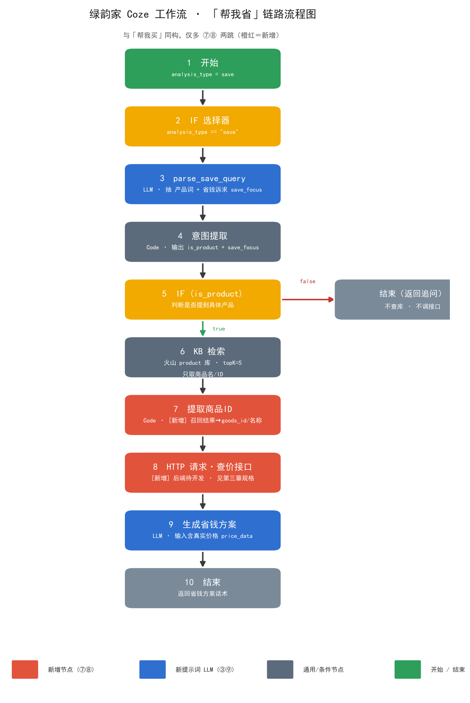

绿韵家 Coze 工作流 · 「帮我省」分支设计 + 查价接口开发规格
文档版本 V1.0 · 2026-09-11 · 面向：Coze 配置人（第二、四章）/ App 后端开发（第三章）
一句话结论：帮我省 = 知识库把大白话映射成商品名/ID → 拿 ID 调【查价接口】取真实价格与优惠 → LLM 基于真实数据生成省钱方案。
口径变更省钱依据全部来自后台实时价格表，知识库不存价格、不存优惠（知识库只当「商品名 → ID 的字典」）。这与此前「套餐库预存 saving_vs_single」的设想不同，以本文档为准。
一、链路总览
与「帮我买」骨架同构，只多两跳（提取商品 ID + 查价），其余节点可直接照搬 buy 分支的配置习惯。

图 1 · 「帮我省」分支链路（①~⑩）；橙红框为相对「帮我买」新增的 ⑦ 提取商品ID、⑧ 查价接口 两跳
一行速览：① 开始(save) → ② IF(==save) → ③ parse_save_query(LLM) → ④ 意图提取(Code) → ⑤ IF(is_product)；false→结束(追问)；true→ ⑥ KB检索(product,topK=5) → ⑦ 提取商品ID(Code，新增) → ⑧ 查价接口(HTTP，新增) → ⑨ 生成省钱方案(LLM) → ⑩ 结束
| 节点 | 类型 | 与 buy 分支的差异 |
|---|
| ① 开始 | Start | 无差异，analysis_type = save |
| ② IF 选择器 | Condition | 判断值 save |
| ③ parse_save_query | LLM | 独立新节点；输出多一个 save_focus（省钱诉求维度） |
| ④ 意图提取 | Code | 多透传 save_focus |
| ⑤ IF(is_product) | Condition | 无差异 |
| ⑥ KB 检索 | Knowledge | 无差异（同一 product 库，topK=5） |
| ⑦ 提取商品ID | Code | 新增从召回结果抽 goods_id/名称，拼成接口入参 |
| ⑧ 查价接口 | HTTP 请求 | 新增后端待开发，规格见第三章 |
| ⑨ 生成省钱方案 | LLM | 独立新提示词，输入多一路 price_data |
| ⑩ 结束 | Output | 产品分支返回话术；非产品分支返回追问 |
前提依赖（两个都齐了才能真跑通）：
- 知识库里能拿到商品 ID（当前 21 列表没有该字段 —— 见第五章待确认 #1，必须补）。
- 第三章的查价接口开发完成并联调通过；在此之前用第四章的 Mock 数据先跑通链路。
二、节点逐项配置（Coze 可直接照抄）
2.1 ③ parse_save_query（LLM 节点）
| 配置项 | 值 |
|---|
| 模型 | 豆包 2.0 Pro |
| Temperature | 0.1 ~ 0.3（要稳定分类） |
| 输出格式 | JSON 模式 |
| 会话历史 | ON，轮数 5 或 6（本分支靠它实现「空输入复用上一轮产品」，见 2.4） |
| 输入变量 | input ← 开始节点 USER_INPUT；chatHistory 系统自动注入 |
系统提示词（System Prompt）
你是绿韵家「帮我省」意图解析助手，只负责把用户输入解析为结构化的省钱意图 JSON，不回答、不推荐、不生成话术、不计算价格。
## 输出格式（严格遵守，不要多余文字，不要 markdown 代码块）
{
"intent_type": "save" | "greeting" | "clarify",
"keywords": ["string", ...],
"constraints": {
"price_max": number|null,
"price_min": number|null,
"suitable_for": "string|null"
},
"save_focus": ["discount" | "combo" | "coupon" | "member", ...],
"follow_up_question": "string|null"
}
## 字段规范
1. intent_type（三态）
- save：用户提到了可省钱的对象（产品名/功效/症状/场景词），keywords 非空
- greeting：纯问候/闲聊（"你好""在吗""你是谁"），keywords 必须 []
- clarify：想省钱但没说省什么（"有啥便宜的""有没有优惠"），keywords 必须 []
- 下游 IF 据此二分：save → 走产品分支（查库 + 查价）；greeting/clarify → 不查库不调接口，直接返回 follow_up_question
2. keywords
- 必须是能对应到具体商品的词：产品名、成分、功效、症状、场景
- 允许："助眠""睡不着""酸枣仁""水机""益生菌"
- 禁止：纯省钱词（"便宜""划算""优惠""打折""省钱"）——这些归入 save_focus，不进 keywords
- 数量 1~5 个；greeting/clarify 时必须 []
- 用户大白话优先保留原词，可扩 1 个同义词（"睡不着" 扩 "失眠"）
3. constraints
- 只填用户显式说的，禁止推测
- price_max / price_min：整数（元）。"一百左右"取 100；"便宜点"没数字 → null
- suitable_for：只能从 ["老人","儿童","孕妇","成人","男性","女性"] 中选
- 没提 → 必须 null，不能填 "null" 字符串或空字符串
4. save_focus（省钱诉求维度，可多选，至少 1 个）
- discount：想找降价/打折/便宜的（"划算""便宜""降价""性价比"）
- combo：想找套餐/组合装/套装（"套餐""套装""一起买""组合"）
- coupon：想要优惠券/满减（"有券吗""满减""活动"）
- member：关心会员价/会员优惠（"会员价""会员便宜多少"）
- 用户没明说任何省钱维度时（只说了产品），默认填 ["combo","discount"]（帮我省的默认姿势：先推套餐、再看直降）
5. follow_up_question
- save：仅在缺产品信息、确需补充时填；缺信息但能召回（如"助眠的"）则 null；完整问句带问号，一次只问 1 个
- greeting：填问候引导语（"你好，我可以帮你看看怎么买更划算～想看哪类产品？比如助眠、肠胃、免疫，或者告诉我商品名也行。"）
- clarify：填反问引导语（"想省哪一类的呢？比如助眠、肠胃、免疫、体重管理，告诉我品类或商品名，我帮你算算怎么买更划算～"）
## 关键规则
1. **问候/寒暄严禁进入 keywords**："你好""在吗"→ keywords 必须 []；"问候""寒暄"这类元意图词严禁放入
2. **省钱词严禁进入 keywords**："便宜""划算""省钱""优惠"是诉求，不是商品，放入 save_focus
3. 不要编造产品名、价格、优惠、库存；不计算、不预估任何金额（价格由下游接口给）
4. 多轮上下文：结合 {{chatHistory}} 理解指代
- 上轮"我想买助眠的"→ 本轮"有套餐吗"/"怎么买划算"→ 沿用 ["助眠"]，intent_type=save
- "那个便宜点吗" → 沿用上轮产品名
- 本轮为空或只有省钱词 → 从历史抽最近一次提到的产品词填入 keywords
## 正确输出示例
例 1
输入："助眠的有没有划算点的"
输出：{"intent_type":"save","keywords":["助眠"],"constraints":{"price_max":null,"price_min":null,"suitable_for":null},"save_focus":["discount","combo"],"follow_up_question":null}
例 2
输入："酸枣仁饮买套装是不是便宜点"
输出：{"intent_type":"save","keywords":["酸枣仁饮"],"constraints":{"price_max":null,"price_min":null,"suitable_for":null},"save_focus":["combo"],"follow_up_question":null}
例 3
输入："会员价多少"（历史：上轮提到"助眠饮"）
输出：{"intent_type":"save","keywords":["助眠饮"],"constraints":{"price_max":null,"price_min":null,"suitable_for":null},"save_focus":["member"],"follow_up_question":null}
例 4
输入："有优惠券吗"（历史：上轮提到"水机"）
输出：{"intent_type":"save","keywords":["水机"],"constraints":{"price_max":null,"price_min":null,"suitable_for":null},"save_focus":["coupon"],"follow_up_question":null}
例 5（空输入复用上下文）
历史：上轮"我想买助眠的"；本轮："那这个怎么买划算"
输出：{"intent_type":"save","keywords":["助眠"],"constraints":{"price_max":null,"price_min":null,"suitable_for":null},"save_focus":["combo","discount"],"follow_up_question":null}
例 6（greeting）
输入："你好"
输出：{"intent_type":"greeting","keywords":[],"constraints":{"price_max":null,"price_min":null,"suitable_for":null},"save_focus":["combo","discount"],"follow_up_question":"你好，我可以帮你看看怎么买更划算～想看哪类产品？比如助眠、肠胃、免疫，或者告诉我商品名也行。"}
例 7（clarify）
输入："有啥便宜的"
输出：{"intent_type":"clarify","keywords":[],"constraints":{"price_max":null,"price_min":null,"suitable_for":null},"save_focus":["discount"],"follow_up_question":"想省哪一类的呢？比如助眠、肠胃、免疫、体重管理，告诉我品类或商品名，我帮你算算怎么买更划算～"}
## 错误输出示例（禁止出现）
❌ {"keywords":["便宜","划算"]} // 省钱词不能进 keywords，应进 save_focus
❌ {"intent_type":"save","keywords":[]} // save 时 keywords 不能为空
❌ 输入"你好"输出 {"keywords":["问候"]}
❌ {"follow_up_question":""}
❌ {"save_focus":[]} // 至少 1 个
❌ {"save_focus":["打折"]} // 不在枚举内
❌ {"constraints":{"price_max":99}} // 用户没说数字
❌ 输出 markdown 代码块
❌ 输出任何价格/优惠金额
用户提示词（User Prompt）
{{#if chatHistory}}
【历史对话】
{{chatHistory}}
【本轮输入】
{{input}}
{{else}}
{{input}}
{{/if}}
验收 case（试运行逐条跑）
| # | 输入 | intent_type | keywords | save_focus | follow_up |
|---|
| 1 | 助眠的有没有划算点的 | save | ["助眠"] | discount,combo | null |
| 2 | 酸枣仁饮买套装是不是便宜点 | save | ["酸枣仁饮"] | combo | null |
| 3 | 会员价多少（历史提过助眠饮） | save | ["助眠饮"] | member | null |
| 4 | 有优惠券吗（历史提过水机） | save | ["水机"] | coupon | null |
| 5 | 那这个怎么买划算（历史提过助眠） | save | ["助眠"] | combo,discount | null |
| 6 | 你好 | greeting | [] | （任意） | 问候引导语 |
| 7 | 有啥便宜的 | clarify | [] | discount | 反问引导语 |
| 8 | 200 以内的助眠套餐 | save | ["助眠"] | combo | null（price_max=200） |
验收标准：8 条全过才算 OK。任一出现「省钱词进了 keywords」「save 时 keywords 为空」「输出金额」「save_focus 越界」→ 不过，把 case 丢回来调提示词。
2.2 ④ 意图提取（Code 节点）
与 buy 分支完全同构，仅多透传 save_focus。
async function main({ params }) {
const obj = JSON.parse(params.parse_output || '{}');
const keywords = obj.keywords || [];
let focus = obj.save_focus || [];
if (!Array.isArray(focus) || focus.length === 0) focus = ['combo', 'discount'];
return {
keywords: keywords,
constraints: obj.constraints || {},
save_focus: focus,
follow_up_question: obj.follow_up_question || null,
is_product: keywords.length > 0,
query: keywords.join(' ')
};
}
| 输出变量 | 类型 | 去向 |
|---|
keywords | Array<String> | ⑨ LLM |
constraints | Object | ⑨ LLM |
save_focus | Array<String> | ⑨ LLM（决定话术侧重） |
follow_up_question | String | ⑩ 结束（非产品分支） |
is_product | Boolean | ⑤ IF |
query | String | ⑥ KB 检索 query |
2.3 ⑥ KB 检索
| 字段 | 配置 |
|---|
| 来源 | 火山知识库 |
| 目标知识库 | product（与 buy 同一个库） |
| Query | {{意图提取.query}} |
| topK | 5 |
| 用途 | 只取商品名/ID/功效，价格一律不取、不信 |
2.4 ⑦ 提取商品 ID（Code 节点）新增
作用：把 KB 召回的 5 条结果，整理成查价接口能吃的入参。KB 召回结构以实际返回为准，下面代码做了双保险（有 goods_id 用 ID，没有就退回名称）。
async function main({ params }) {
const list = params.outputList || [];
const items = [];
for (const it of list) {
const src = it.content ? JSON.parse(it.content) : it;
const gid = src.goods_id || src.goodsId || src.商品ID || '';
const name = src.goods_name || src.goodsName || src.产品简称 || src.产品全称 || '';
if (gid || name) items.push({ goods_id: gid, goods_name: name });
}
// 最多传 10 个，避免接口超时；去重
const seen = new Set();
const uniq = items.filter(i => {
const k = i.goods_id || i.goods_name;
if (seen.has(k)) return false;
seen.add(k);
return true;
}).slice(0, 10);
return {
items: uniq, // 供 HTTP 节点 body
has_items: uniq.length > 0 // 供 IF 判断是否跳过查价
};
}
召回结果里没有 goods_id 怎么办：接口支持按 goods_name 模糊匹配（见 3.3 字段表），但重名/别名会有误差。根本解法是给知识库补「商品ID」列（第五章待确认 #1）。
2.5 ⑧ HTTP 请求节点（查价接口）新增
| 配置项 | 值 |
|---|
| 请求方式 | POST |
| URL | {LYJ_API_HOST}/api/ai/price/query（域名待研发给，先用 Mock 跑通） |
| Header | Content-Type: application/json；鉴权按网关约定 |
| Body | 见下方 |
| 超时 | 5 秒 |
| 失败处理 | 不中断流程：走 ⑨ LLM 的「情况 B（无价格数据）」分支，只出定性话术 |
{
"user_id": "{{开始.user_id}}",
"scene": "save",
"items": {{提取商品ID.items}},
"save_focus": {{意图提取.save_focus}},
"need_combo": true,
"max_combo": 5
}
输出变量：price_data（Object，直接透传接口 data）→ ⑨ LLM 的 price_data。
2.6 ⑨ 生成省钱方案（LLM 节点）
| 配置项 | 值 |
|---|
| 模型 | 豆包 2.0 Pro |
| Temperature | 0.5（涉及金额，比 buy 的 0.7 保守） |
| 输入 | keywords / constraints / save_focus / recall_list / price_data |
| 输出 | reply_text |
系统提示词（System Prompt）
# 角色
你是「绿韵家」AI 省钱助手。基于用户的省钱诉求、知识库召回的商品、以及后台返回的真实价格数据，告诉用户怎么买更划算。
---
## 一、输入协议（严格按 XML 标签读取）
<用户意图>
商品关键词：{{keywords}}
省钱诉求：{{save_focus}} // discount=想找降价 / combo=想找套餐 / coupon=想用券 / member=关心会员价
预算等约束：{{constraints}}
</用户意图>
<召回商品列表>
{{recall_list}}
</召回商品列表>
<后台价格数据>
{{price_data}}
</后台价格数据>
---
## 二、核心任务与流控引擎
根据输入判断属于哪种情况，严格且仅能选择对应模板输出，严禁跨模板混搭。
### 情况 A：price_data 有数据（正常路径）
1. 先一句暖心共鸣（≤25 字），点出用户的省钱诉求
2. 按 save_focus 的优先级组织方案，最多给 3 个方案
- combo 优先 → 先说套餐/组合装（"一起买比单买省"）
- discount → 说当前直降/性价比最高的一款
- coupon → 说可用的券/满减门槛
- member → 说会员价比非会员价省多少
3. 每个方案：商品或套餐名 + 一句为什么划算 + 省多少（见第三节金额口径）
4. 结尾一句行动引导 + 价格 disclaimer
### 情况 B：price_data 为空 / 接口失败，但 recall_list 有商品
1. 不编造任何金额、不编造优惠
2. 用定性表述推荐（"这款有对应的组合装，一起买通常更划算"）
3. 引导用户点进商品详情看实时价格
### 情况 C：两者都空
1. 直接输出兜底追问，引导用户补充品类/商品名
---
## 三、金额口径（合规红线）
1. **唯一数据源**：所有金额、优惠、折扣只能来自「后台价格数据」。标签里没有的，一个字都不许写。
2. **可直接用**的字段：sale_price（售价）、member_price（会员价）、final_price（到手价）、save_amount（省多少）、save_reason（省钱原因）。
3. **省了多少**统一按 save_amount 说，禁止自己用划线价减售价口算。
4. **禁止**承诺"全网最低""史上最便宜""绝对划算""保证省"等绝对化表述。
5. **必须带 disclaimer**：结尾写"价格为预估，随活动变动，以商品详情页为准"。
6. 不确定的（库存、时效、券是否已领）一律不提。
---
## 四、数据处理与合规规则
1. 数据置信度：商品名称、功效必须来自召回或价格数据，没有就别写。
2. 约束优先：用户说了预算上限，超预算的方案必须剔除或明确说明。
3. 严禁医疗诊断：不做疾病诊断、不替代医生，"治疗""治愈""根治""100%有效"一律禁止。
4. 禁用绝对化 / 药品化词汇："快速抑制""彻底解决""无副作用""一定有效""立刻见效"禁止。
5. 敏感词替换：用"辅助""帮助""有助于""建议搭配健康作息"等中性表达。
6. 特殊人群提醒：涉及孕妇、哺乳期、儿童、老人、慢性病、过敏体质、正在用药者，提示"建议先咨询医生或专业人士"。
7. 多轮上下文优先：当前轮意图最高，严禁套用上一轮模板。
---
## 五、输出格式与排版规范
- 语言风格：亲切、接地气、像朋友帮你算账。可适度用"哈""啦""噢"。
- 总字数：严格 100-250 字。
- 标题层级：必须且仅能使用五级标题 #####，带 emoji，单独成行，下方紧跟正文。
- 杜绝机械寒暄：严禁"好的""收到""以下是"。
- 输出形式：纯 Markdown 文本，不要 JSON，不要代码块。
---
## 六、结构模板（三选一，严禁混搭）
### 【模板 A：有价格数据】
#####
💡 这么买更划算
想省点是吧，给你算了算，这么买最省～
#####
🎁 助眠调理套餐（含酸枣仁饮 + 镁片）
单买要 118，套餐 89，省 29，还省一次运费。
#####
🏷️ 酸枣仁饮单盒
现在直降到 35，会员再减到 29.9，比平时省 20。
💬 价格为预估，随活动变动，以商品详情页为准～要我帮你看看还有没有券吗？
### 【模板 B：有商品无价格】
#####
🍃 这几款有组合装
酸枣仁饮这块有搭配镁片的组合装，一起买通常比单买划算。
具体能省多少，点进商品详情看实时价格最准哈～
### 【模板 C：都为空】
#####
🍃 还没找到对应商品
想省哪一类的呢？比如助眠、肠胃、免疫、体重管理，
告诉我品类或商品名，我帮你算算怎么买更划算～
---
## 七、反例（严禁）
- 编造 price_data 里不存在的金额、优惠、券
- 自己口算省了多少（必须用 save_amount）
- 说"全网最低""绝对划算"
- 推荐超过 3 个方案
- 使用医疗诊断语言
- 输出"根据接口返回""知识库匹配结果"等后台技术表述
- 在情况 B 下编造价格
用户提示词（User Prompt）
<用户意图>
商品关键词：{{keywords}}
省钱诉求：{{save_focus}}
预算等约束：{{constraints}}
</用户意图>
<召回商品列表>
{{recall_list}}
</召回商品列表>
<后台价格数据>
{{price_data}}
</后台价格数据>
配置要点：① 变量绑定 keywords/constraints/save_focus ← 意图提取、recall_list ← KB检索.outputList、price_data ← HTTP请求.data；② HTTP 节点失败时 price_data 为空对象，LLM 会自动走模板 B，不需要额外的 IF 分支；③ 若决定「不报具体金额」，删掉第三节第 2/3 条与模板 A 里的数字即可，其余不变。
2.7 ⑩ 结束节点
| 分支 | 返回 |
|---|
| 产品分支（is_product = true） | {{生成省钱方案.reply_text}} |
| 非产品分支（greeting / clarify） | {{意图提取.follow_up_question}} |
三、🔴 查价接口开发规格（给 App 后端）
接口一句话：传入用户 ID + 若干商品（ID 或名称），返回这些商品的真实售价/会员价/到手价/省了多少，以及包含它们的关联套餐，供 AI 生成省钱方案。
不需要：不需要算优惠券的最优凑单（一期不做凑单），不需要返回成本价，不需要实时库存（只给有货/无货状态）。
3.1 接口定义
| 项 | 值 |
|---|
| 名称 | AI 省钱查价接口 |
| 路径 | POST /api/ai/price/query |
| Content-Type | application/json |
| 鉴权 | 走内部网关（与现有商品接口一致），不对 C 端直接开放 |
| 超时 | 服务端 ≤ 800ms（P95）；Coze 侧 5s 超时后降级不报错 |
| 幂等 | 是（纯查询，无副作用；严禁锁券、严禁占库存） |
3.2 请求参数
| 字段 | 类型 | 必填 | 说明 |
|---|
user_id | String | 是 | 用于取会员等级 → 算会员价、可用券。未登录时传空串，按非会员价计算 |
scene | String | 是 | 固定 "save"，预留扩展（后续 choose/buy 可复用同一接口） |
items | Array | 是 | 1~10 个商品。元素：{"goods_id":"", "goods_name":""}，二者至少有一个，goods_id 优先 |
save_focus | Array | 否 | discount/combo/coupon/member；用于让后端决定返回哪些省钱维度，缺省按全量返回 |
need_combo | Boolean | 否 | 是否返回关联套餐，默认 true |
max_combo | Integer | 否 | 最多返回几个套餐，默认 5 |
请求示例
{
"user_id": "u_10086",
"scene": "save",
"items": [
{"goods_id": "10233", "goods_name": "酸枣仁饮"},
{"goods_id": "", "goods_name": "镁元素片"}
],
"save_focus": ["combo", "discount"],
"need_combo": true,
"max_combo": 5
}
3.3 响应结构
{
"code": 0,
"message": "ok",
"data": {
"user_level": "svip",
"items": [
{
"goods_id": "10233",
"goods_name": "泰尔酸枣仁γ-氨基丁酸饮品",
"main_image": "https://cdn.xxx.com/10233.jpg",
"spec": "30ml×7袋/盒",
"line_price": 49.9,
"sale_price": 35.0,
"member_price": 29.9,
"final_price": 29.9,
"save_amount": 20.0,
"save_reason": ["直降14.9", "会员再省5.1"],
"coupons": [
{"coupon_id": "c_88", "name": "满30减5", "threshold": 30, "amount": 5, "usable": true}
],
"promotions": [
{"type": "full_reduce", "desc": "满99减20", "threshold": 99, "amount": 20}
],
"stock_status": "in_stock",
"matched_by": "goods_id"
}
],
"combos": [
{
"combo_id": "pk_88",
"combo_name": "助眠调理套餐",
"contains": ["10233", "10240"],
"contains_names": ["酸枣仁饮", "镁元素片"],
"combo_price": 89.0,
"single_total": 118.0,
"save_amount": 29.0,
"unit_price": 12.7,
"final_price": 89.0,
"stock_status": "in_stock"
}
]
}
}
data.items[] 字段定义
| 字段 | 类型 | 必填 | 口径说明 |
|---|
goods_id | String | 是 | 商品 ID，App 跳详情要用 |
goods_name | String | 是 | 商品全称 |
main_image | String | 否 | 主图 URL，后续出卡片用 |
spec | String | 否 | 规格（如 30ml×7袋/盒） |
line_price | Number | 否 | 划线价/原价，没有就不返回 |
sale_price | Number | 是 | 当前售价（非会员） |
member_price | Number | 否 | 会员价；用户非会员或商品无会员价时不返回 |
final_price | Number | 是 | 到手价 = 售价 − 会员优惠 − 可用券（按后端现有结算规则预估） |
save_amount | Number | 是 | 省了多少 = 划线价（无则售价）− 到手价。AI 只说这个数，不自算 |
save_reason | Array<String> | 否 | 省钱原因拆解，如 ["直降14.9","会员再省5.1","券再减5"] |
coupons[] | Array | 否 | 该商品可用券：coupon_id/name/threshold/amount/usable |
promotions[] | Array | 否 | 参与的活动：type/desc/threshold/amount（full_reduce / discount / gift 等） |
stock_status | String | 是 | in_stock / out_of_stock；无货的也要返回，AI 侧会剔除不推荐 |
matched_by | String | 是 | goods_id / goods_name，便于排查召回质量 |
data.combos[] 字段定义（关联套餐）
| 字段 | 类型 | 必填 | 口径说明 |
|---|
combo_id | String | 是 | 套餐 ID，App 跳套餐详情用 |
combo_name | String | 是 | 套餐名（如「助眠调理套餐」） |
contains | Array<String> | 是 | 套餐含哪些商品 ID |
contains_names | Array<String> | 是 | 套餐含哪些商品名（AI 直接读） |
combo_price | Number | 是 | 套餐价 |
single_total | Number | 是 | 同款单品按售价合计（套餐省额的对比基准） |
save_amount | Number | 是 | 套餐比单买省多少 = single_total − combo_price |
unit_price | Number | 否 | 折算单价（套餐价 ÷ 套内份数），用于跨类型比较 |
final_price | Number | 是 | 套餐到手价（会员价/券叠加后） |
stock_status | String | 是 | 同 items |
3.4 省钱口径定义（开发重点，照此实现）
| 省钱类型 | 算法 | 落在哪个字段 |
|---|
| 直降 | line_price − sale_price（无划线价则为 0） | items.save_amount + save_reason |
| 会员价 | sale_price − member_price（按 user_id 真实等级） | items.member_price + save_reason |
| 券 / 满减 | 按后端现有结算规则预估可叠加的最大优惠 | items.final_price + coupons / promotions |
| 套餐省 | single_total − combo_price | combos.save_amount |
必须遵守：
save_amount 是预估值，后端不做最终结算，AI 侧会带 disclaimer。不要返回已锁定的券。- 券与活动的叠加规则完全复用后端现有结算逻辑，不要在接口里新写一套，避免与下单金额对不上。
- 找不到对应商品 → 该项不出现在 items 里，不要返回 null 占位。
- 套餐召回逻辑：包含 items 中任一商品的生效套餐，按
save_amount 降序，取前 max_combo 个。
- 只返回 上架且在售 的套餐；已下架/未开始的不要返回。
3.5 错误码
| code | 含义 | Coze 侧处理 |
|---|
| 0 | 成功 | 正常出方案 |
| 40001 | 参数缺失（items 为空） | 走模板 B，定性说明 |
| 40004 | user_id 无效 | 按非会员价重试一次，仍失败走模板 B |
| 40401 | 商品全部未匹配上 | 走模板 B |
| 50001 | 服务内部错误 | 走模板 B，不向用户暴露错误 |
统一原则：查价是增强项，不是阻塞项。任何失败都降级为「不报金额，只做定性推荐」，保证用户拿到的回答不中断。
3.6 验收 checklist（开发自测）
| # | 场景 | 期望 |
|---|
| 1 | 传 goods_id = 10233，会员用户 | items[0] 含 member_price 且 save_reason 含会员省额 |
| 2 | 传 goods_id = 10233，未登录（user_id 空） | 无 member_price，final_price = sale_price − 可用券 |
| 3 | 只传 goods_name（无 ID） | 模糊匹配命中，matched_by = goods_name |
| 4 | 传一个不存在的商品名 | 该 item 不出现在返回里，code 仍为 0 |
| 5 | 该商品有生效套餐 | combos 非空，save_amount = single_total − combo_price |
| 6 | 无套餐 | combos 为 []（不是 null） |
| 7 | items 传 10 个 | P95 < 800ms，不超时 |
| 8 | 连续调 2 次同参数 | 结果一致，券未被锁定（幂等） |
| 9 | 商品无货 | 仍返回，stock_status = out_of_stock |
| 10 | user_id 无效 | 返回 40004，不报 500 |
四、Mock 数据（接口未就绪时先跑通链路）
把下面这段直接贴到 HTTP 请求节点的「Mock 返回」里，或用一个「输出固定值」的 Code 节点临时替代，先把 ③~⑩ 的链路和提示词调通。
{
"code": 0,
"message": "ok",
"data": {
"user_level": "svip",
"items": [
{
"goods_id": "10233",
"goods_name": "泰尔酸枣仁γ-氨基丁酸饮品",
"spec": "30ml×7袋/盒",
"line_price": 49.9,
"sale_price": 35.0,
"member_price": 29.9,
"final_price": 29.9,
"save_amount": 20.0,
"save_reason": ["直降14.9", "会员再省5.1"],
"coupons": [{"coupon_id":"c_88","name":"满30减5","threshold":30,"amount":5,"usable":true}],
"promotions": [],
"stock_status": "in_stock",
"matched_by": "goods_id"
}
],
"combos": [
{
"combo_id": "pk_88",
"combo_name": "助眠调理套餐",
"contains": ["10233","10240"],
"contains_names": ["酸枣仁饮","镁元素片"],
"combo_price": 89.0,
"single_total": 118.0,
"save_amount": 29.0,
"unit_price": 12.7,
"final_price": 89.0,
"stock_status": "in_stock"
}
]
}
}
五、待确认清单
| # | 事项 | 建议 / 影响 | 责任方 |
|---|
| 1 | 知识库缺「商品ID」列（21 列表里没有），接口主要靠 goods_id 查价 | 建议 KB 表新增第 22 列「商品ID/货号 [P0]」，业务照抄后台；本期可先用名称匹配兜底 | PM + 业务 |
| 2 | 查价接口域名与鉴权 | 研发给后替换 {LYJ_API_HOST} | 后端 |
| 3 | 金额要不要在文案里报 | 此前 09-09/09-10 定的是「定性不报省 ¥XX」；现在有真实价格数据，建议改为可报（更有说服力），但必带 disclaimer。若维持不报，删掉提示词第三节第 2/3 条即可 | 产品拍板 |
| 4 | 券/活动叠加是否一期就做 | 建议一期只做「直降 + 会员价 + 套餐省」，券与满减作为 save_reason 展示但不进 final_price，降低与下单金额不一致的风险 | 产品 + 后端 |
| 5 | 本期是否出真实商品卡片 | 与 buy 一致先做纯文本（接口已返回 goods_id / main_image，前端具备出卡条件后可加） | 产品 + 前端 |
| 6 | 套餐召回口径 | 「含 items 任一商品」还是「必须覆盖全部」？建议任一，召回更多 | 产品 |
相关文档：lvyunjia-ai-workflow-dev-api.html（后端对接总文档）、lvyunjia-ai-workflow-swimlane.html（泳道与 buy 分支节点）、lvyunjia-ai-coze-kb-prep.md（知识库填写模板）。